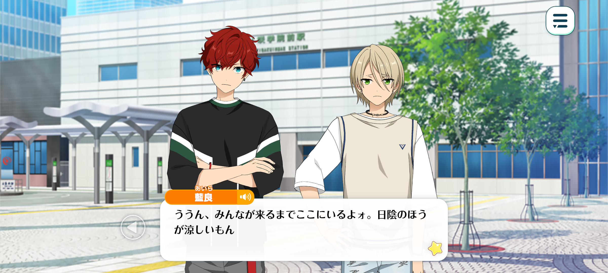
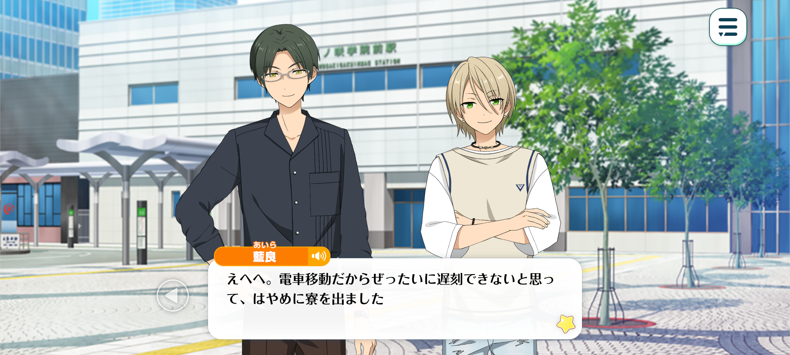
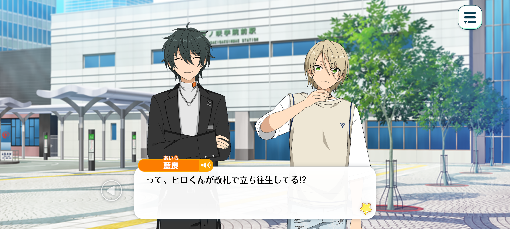
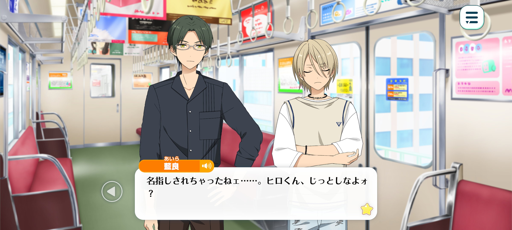
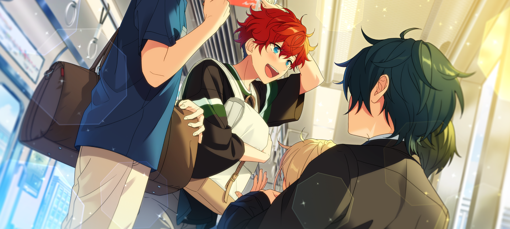

Scout! Keito Lecture
Summer Foam – Chapter 3


Time: Noon, a few days later

Hiiro: ...This is where we're supposed to meet, but there's nobody here. Looks like we're the first ones to arrive.
Also, Aira, why are you standing all the way over there? Come and stand with me.
Aira: No, I'll come over once everyone else gets here. It's cooler in the shade.
Haa~, the sun's so bright. The weather's perfect for camping, but the heat coming off the tarmac is seriously intense.
I'd hate to get heatstroke. Hiro-kun, come and stand in the shade with me.
Hiiro: I'm fine. I'm in good health, and I've got this water bottle Tatsumi-senpai gave me if I get thirsty.
Aira: I don't know the first thing about camping, so Tattsun-senpai went out of his way to make sure we had everything we needed.
Hiiro: Umu! Salt tablets...? Mayoi-senpai gave me these for some reason. Just as our senpais advised us, we should remember to replenish our salt and drink plenty of water!
Aira: Ahaha. It's like our parents are sending us off on our first school trip... ♪
Hiiro: What about you, Aira? You've got such a big bag. What have our senpais packed for you?
Aira: They haven't packed anything for me! Everything in here is stuff I've brought myself. I've got all sorts of things, like insect repellent and my phone charger.
Even if we're going out into nature, there's no way I can leave my phone behind! I wanna be as comfortable as possible.
...Oh? Someone's getting out of a taxi—
Hiiro: It's our senpais! Ah, it looks like they've spotted us!

Keito: You arrived before the appointed time. Well done.
Aira: Ehehe. I left the dorms early because I didn't want to risk being late, especially since we're taking the train.
Mika: Did you two walk to the station? That's good, stickin' to the proper route!
I was walkin' too, but Yukkun and the others spotted me wanderin' around and gave me a lift.
Yuzuru: I'm glad we spotted you. The sun is particularly harsh today, and we wouldn't want you suffering from heatstroke.
As I mentioned in the taxi, I do worry about you wandering around without taking the proper precautions. Don't you have a parasol?
Mika: I do, but... I can’t use it.
Hiiro: What happened to it? Did it break?
Mika: Nah. Oshi-san got it for me from this really old shop in Paris, so it's one of a kind.
If I took it out with me, I might lose it, so I'm not bringin' it anywhere.
Aira: I totally understand wanting to protect something precious to you. I'm the same when it comes to my limited-edition merch. I want to keep it safe!
But didn't Itsuki-senpai give it to you because he was worried about your health?
If you end up getting heatstroke because you won't use it, wouldn't that defeat the whole purpose of his gift...?
Mika: Nnn~, I guess you've got a point, but...
Hiiro: It's alright, Kagehira-senpai. You don't need a parasol to protect yourself from the sun.
Here, have some of these salt tablets. I think as long as you replenish your salt and drink plenty of water, you'll be fine!
Mika: Hng, thanks~. As a way of showin' my gratitude, I brought some sweets—
Hnnngh, they've all melted in the heat!?
I brought somethin' for everyone today, but... I've got nothin' left to give you now. I'm really sorry!
Hiiro: Don't worry about it. As long as you're alright, that's all that matters.
Keito: ...I'm sorry to interrupt, but I think we should get going. It'll be cooler on the platform, since it's covered.
Hmm, it's particularly busy today. Stay close to me so we don't lose anyone along the way.
Aira: Got it!

Mika: ...Phew~. Made it through the ticket barrier without any problems today, too.
I always get nervous that the alarm's gonna go off and the gates'll close while I'm tryin' to get through.
Aira: Ahaha. It's the worst, especially when you're in a hurry.
Eh? Hiro-kun's still at the ticket barrier!?
Yuzuru: What seems to be the matter, Hiiro-sama?
Hiiro: I'm doing the same thing as everyone else, but it's not working.
Yuzuru: I see... Do you not have an IC card?
Hiiro: An IC card...? Is this one?
Yuzuru: That is an admission card for the ES building. Please, use this one instead. It's unregistered, so there shouldn't be any problems.
Hiiro: Thank you. But what about you, Fushimi-senpai?
Yuzuru: Please don't worry. I always carry a spare with me. Now then, shall we go?
Hiiro: Umu, I should have bought a ticket like I was supposed to. I was so excited when I saw everyone simply touching their cards to the sensor and getting through that I wanted to try it myself!
Yuzuru: Fufu. I'm afraid everyone is waiting for us, so we don't have time for that right now. However, on our way home, I'll teach you how to get an IC card of your own.
You won't have to queue up to buy a ticket every time you travel, so they're very convenient.
Hiiro: Thank you, Fushimi-senpai. You’re a real help.
Time: Ten minutes later

Keito: —We've successfully boarded the train. Everything is going according to plan so far.
We'll be changing trains after three stops, so please be ready. Especially you, Amagi.
Aira: You've been singled out~... Hiro-kun, could you stop fidgeting?

Hiiro: I understand, but I can't contain my excitement. We don't have this kind of transport back in my hometown.
Ah! Fushimi-senpai, look. There's a fine billboard outside that window!
Yuzuru: So there is. Thank you for pointing it out.
Aira: You don't have to humour him, you know. Still, I'm sorry if Hiro-kun is causing you any trouble.
Yuzuru: Oh, not at all. I enjoy helping others whenever I can, so I find this rather pleasant.
Fufu. He's quite a handful, much like Bocchama was. How nostalgic.